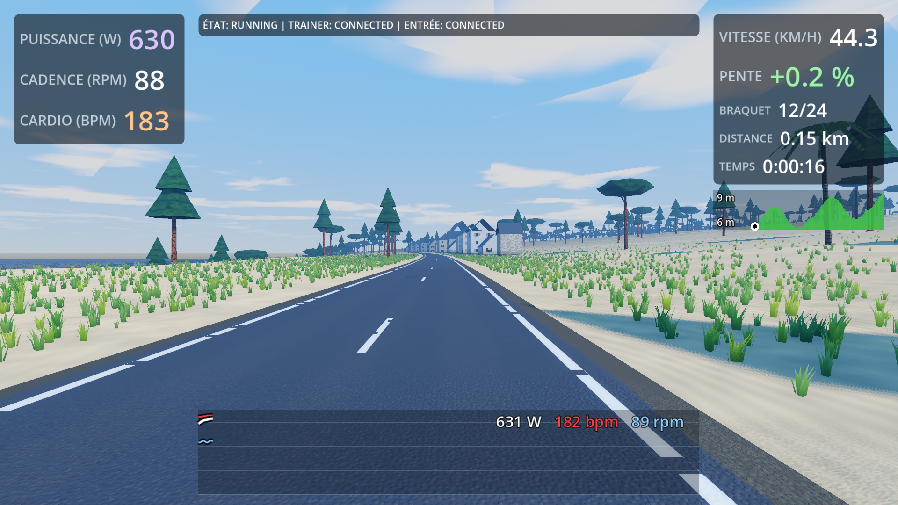
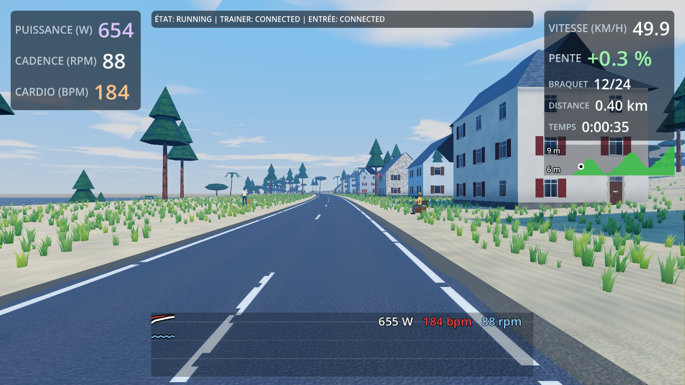
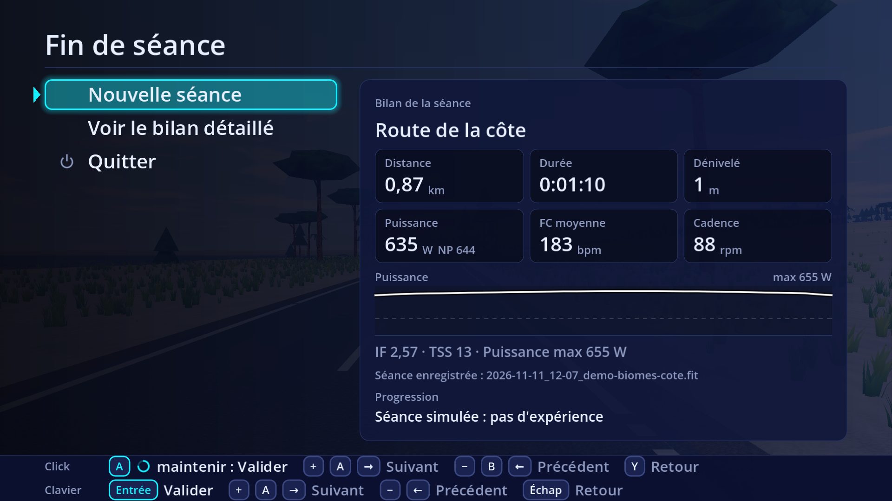

Tout se connecte en une seconde, aucune panne.
Parcours ~/mesures-2026-11-01-auto/r811d/captures/routes/demo-biomes-cote.world,
SIM, 129 s,
difficulté 100.0 %, 1920x1080 medium (qualité appliquée ; demandée medium)
(Xvfb, Vulkan logiciel, Forward+).
| OK | démarrage du core | « Core démarré » lu |
| OK | engine relié au core | hello_ack 14.1 s après le démarrage du core |
| OK | parcours chargé par l'engine | demo-biomes-cote à 24.6 s |
| OK | engine vivant jusqu'à la fin | 129 s |
| OK | fin de séance | FINISHED après end_session |
| OK | arrêt du core | code de sortie 0 |
| OK | 3/3 images enregistrées après le chargement, réponse en 0.66 s (médiane), 0.68 s au pire | captures de l'engine |
| OK | qualité réellement appliquée | medium appliquée (3 capture(s)) ; dernière ligne : medium (demandée medium, source cli) |
| OK | erreurs et avertissements de Godot | aucun |
| OK | rendu du jeu (Forward+) | Vulkan, Forward+ |
| INFO | aucune tuile n'apparaît dans le champ à moins de 1 km | 0 apparition(s) |
| INFO | jointures des tuiles proches voisines | 0 bord(s) disjoint(s) |
| OK | exceptions du core | 0 trace(s) Python dans core.log |
| OK | journal et FIT écrits | 1 journal(aux), 1 FIT |
| OK | openride-core summary | bilan lu |
| OK | log_report | analyse du journal du core lue |
| OK | médiane 50.5 km/h sur 49 s (attendu 50.0 ± 5.0), de 46.6 à 50.9 km/h | vitesse imposée 50 km/h |
| OK | décor : aucun contact sur la route | 0 sur 3 captures |
| OK | fréquence cardiaque au journal | 70 échantillons, 179 à 185 bpm |
Lignes orange : événements du scénario.
| Sorte | Captures où elle est vue | Médiane | Maximum |
| oiseaux | 3/3 | 1 | 1 |
| animaux | 0/3 | 0 | 0 |
| véhicules | 0/3 | 0 | 0 |
| véhicules lointains | 0/3 | 0 | 0 |
| cyclistes | 1/3 | 0 | 1 |
| ciel | 2/3 | 1 | 1 |
| bateaux | 3/3 | 6 | 6 |
Sons du décor démarrés pendant la séance : airliner_rumble ×1, dog_bark ×1. Détail : decor.csv.



59.5 s Click : Y = pause · + / − = braquet · appui long = 10 braquets · ↑ / ↓ = vue (clavier : mêmes touches) 69.6 s
Bilan de séance : /tmp/openride-bench-r_ex4x08/home/OpenRide/Activities/2026-11-11_12-07_demo-biomes-cote.fit Durée 0:01:09 (écoulé 0:01:09), distance 0.87 km, dénivelé + 1 m Puissance : moyenne 635 W, NP 644 W ; FTP 250 W, IF 2.57, TSS 13 Zones : Z1 < 55 % 0:00:00 0.0 % Z2 55 à 75 % 0:00:00 0.0 % Z3 75 à 90 % 0:00:00 0.0 % Z4 90 à 105 % 0:00:00 0.0 % Z5 105 à 120 % 0:00:00 0.0 % Z6 120 à 150 % 0:00:00 0.0 % Z7 > 150 % 0:01:10 100.0 % Meilleures puissances : 5s 654 W, 1min 640 W Cadence : moyenne 88, max 90 rpm FC : moyenne 183, max 185 bpm
Séance : 2026-11-11 12:06:53,477 -> 2026-11-11 12:09:05,615 (132.1 s, 1 lancement(s))
Modes : trainer=sim, entrées=sim
Trainer: 1 connexion(s), 1 perte(s), 0 reconnexion(s), 0 refus (connecté 131.5 s / perdu 0.0 s)
Click : 2 connexion(s), 2 déconnexion(s), 0 échec(s) de scan
Appuis : 0 (court +0 / -0, long +0 / -0)
connexions : min 130.9 s, médiane 131.0 s, max 131.2 s ; reconnexion médiane ?, max ?
notifications : 9.9/s en moyenne, min 9.9/s
coupures : dernier appui avant coupure ? ; 2/2 à moins de 2 s d'une écriture ou d'un événement du trainer
Pauses : 0 (aucune)
Perf : 2 relevé(s) — pas p99 max 0.64 ms (seuil 5.0 ms), retard p99 max 3.3 ms (seuil 20.0 ms), CPU max 3.0 % (seuil 15.0 %)
Rust : seuil SRS §14.1 atteint = non
Alertes: 0 erreur(s), 10 avertissement(s)
0.0 s 2026-11-11 12:06:53,486 INFO core Ceinture cardio : sim.
0.6 s 2026-11-11 12:06:54,088 INFO ftms_driver Trainer connecté (HomeTrainer 0000 (sim))
0.9 s 2026-11-11 12:06:54,401 INFO input Zwift Click connecté (adresse C1:1C:00:00:00:01, recherche 0.9 s, 1 tentative(s))
1.2 s 2026-11-11 12:06:54,700 INFO input Zwift Click connecté (adresse C1:1C:00:00:00:02, recherche 1.2 s, 1 tentative(s))
1.5 s 2026-11-11 12:06:54,995 INFO hr Ceinture cardio retenue : HRM (sim) (C0:FF:EE:00:18:0D) ; pour la garder, mettre hr_address = "C0:FF:EE:00:18:0D" dans config.toml
1.7 s 2026-11-11 12:06:55,195 INFO hr Ceinture cardio : batterie 80 %
1.7 s 2026-11-11 12:06:55,196 INFO hr Ceinture cardio connectée (HRM (sim))
9.0 s 2026-11-11 12:07:02,528 INFO core Engine connecté.
59.5 s 2026-11-11 12:07:52,988 INFO core Séance : READY -> RUNNING
61.0 s 2026-11-11 12:07:54,471 INFO input Click : 595 notification(s) en 60 s (9.9 par seconde)
61.0 s 2026-11-11 12:07:54,471 WARNING input Click droit : connecté mais muet depuis 60 s
61.3 s 2026-11-11 12:07:54,765 INFO input Click : 595 notification(s) en 60 s (9.9 par seconde)
61.3 s 2026-11-11 12:07:54,766 WARNING input Click gauche : connecté mais muet depuis 60 s
121.0 s 2026-11-11 12:08:54,478 INFO input Click : 595 notification(s) en 60 s (9.9 par seconde)
121.3 s 2026-11-11 12:08:54,774 INFO input Click : 595 notification(s) en 60 s (9.9 par seconde)
129.1 s 2026-11-11 12:09:02,542 INFO core Séance : RUNNING -> FINISHED